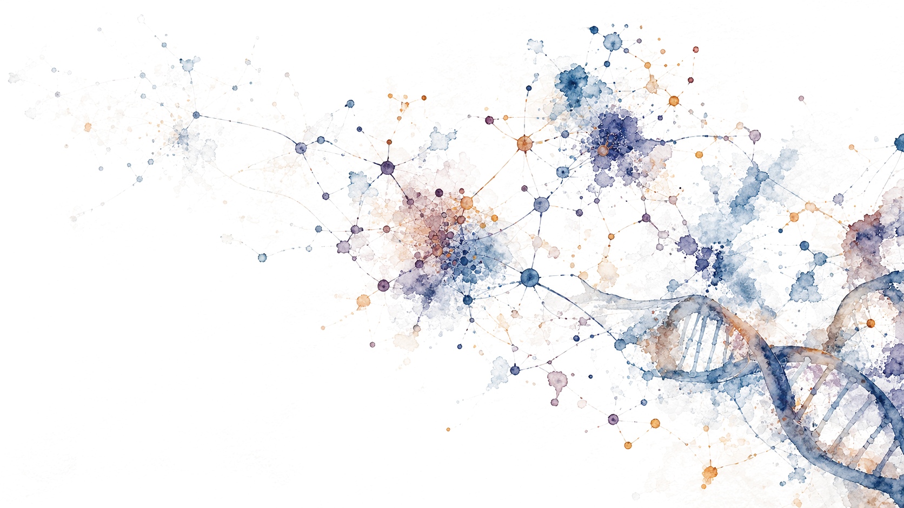

Research area
Systems Medicine
Genomics and other omic technologies provide increasingly detailed views of individual biology. Systems approaches integrate these data with environmental and behavioral factors to understand health as a dynamic network of interactions—and to explore more personalized approaches to prevention and treatment.
Research reviews
-
Placeholder
[Placeholder] Review title
One sentence saying what the review does. Temporary layout text.
-
Placeholder
[Placeholder] A longer review title that runs onto a second line to test wrapping
One sentence saying what the review does. Temporary layout text.
-
Placeholder
[Placeholder] Review title
One sentence saying what the review does. Temporary layout text.